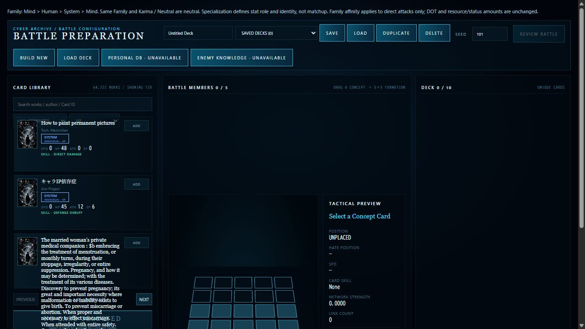
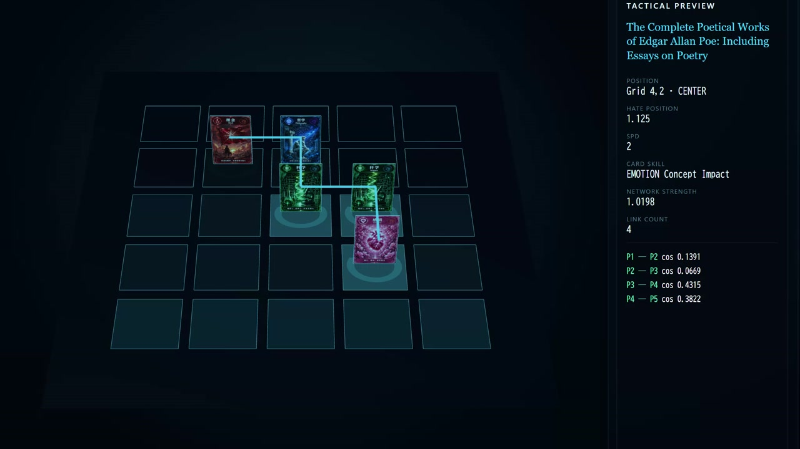
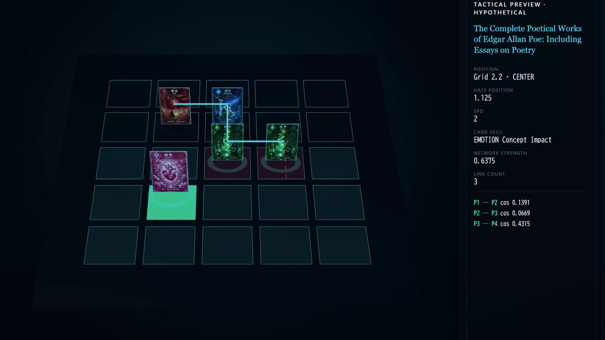
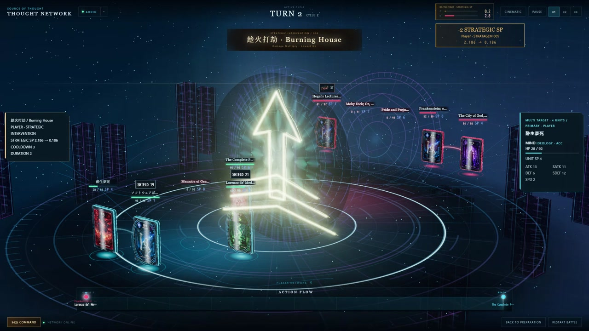
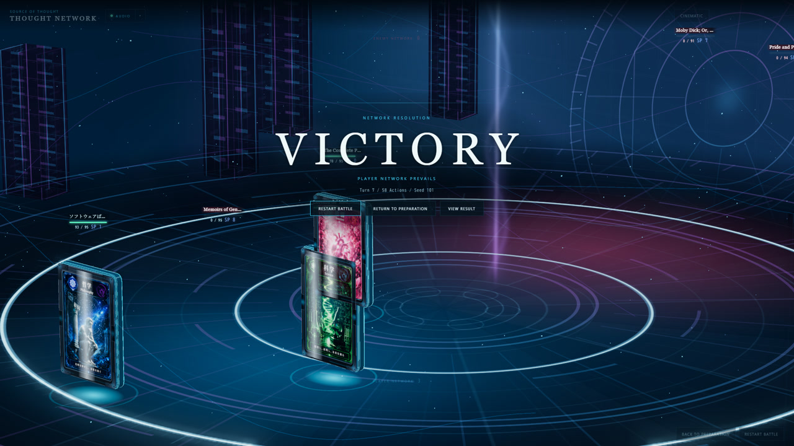
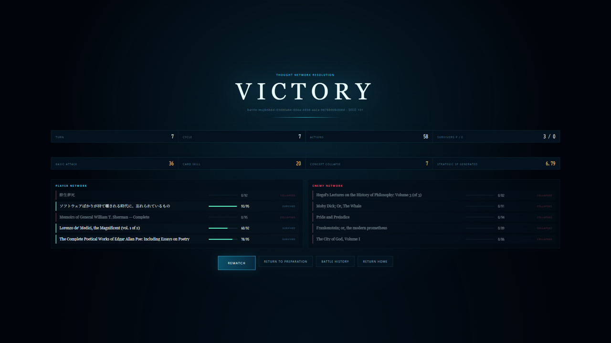

IN-GAME / WEB BUILD
実画面。
現在の公開版captureと、同じPresentation設定で収録したPVの実戦映像から。架空UIやConcept Artではありません。
Source of Thoughtをプレイ ↗
現在の公開URLから取得したCard Library / Deck選択画面。

5×5配置とTactical Preview。PVのゲーム画面を部分capture。

配置変更に伴うlinkとPreview。

Familyに基づくサイケデリックな干渉Presentation。

005 趁火打劫。Seed 101の実戦形成。

Player Networkが勝利した実戦画面。

結果確認からRematch / Preparationへ。